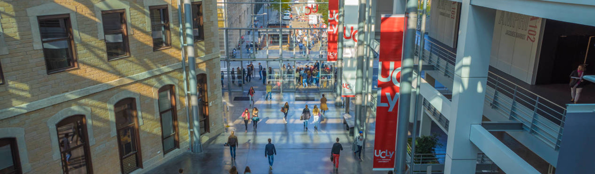

Des expériences diverses et variées

Un peu de musique pendant votre navigation ? (Nécessite Spotify)
MON PARCOURS PROFESSIONNEL ?
-
+
Community Manager (alternance)
▌Weréso Lyon ▌
-Community Management : animation des différentes pages de la société sur les réseaux sociaux et
le site web
-Gestion des plateformes de réservation et des campagnes d'emailing
-Gestion administrative et commerciale
-Projet de mise en lien du CRM et de l'outil de facturation
-Accueil physique des clients, tenue des locaux
-Relais et créateur de liens entre les co-workers
-
×

Gestionnaire avant-vente (alternance)
▌BNP Paribas Lease Group ▌
Mise en loyers:
- Conformité (vérification de la complétude des dossiers ainsi que de leur conformité aux réglementations
en vigueur du Code Monétaire et Financier)
- Récupération des documents auprès des fournisseurs (appels téléphoniques, mails)
- Finalisation et paiement des dossiers de locations / crédits-baux (logiciel interne)
- Gestion des litiges (Relances téléphoniques et mails, tableau suivi/statistiques Excel)
- Gestion du courrier entrant et sortant (réception, envoi, statistiques)
- Formation d'une stagiaire
Objectifs: acquérir un sens de l'autonomie, de la rigueur, de l'aisance téléphonique et professionnelle.
Ma singularité : quantifier mon travail pour faire toujours mieux.
Réalisation d'un mémoire de fin de DUT sur le thème suivant: Conformité bancaire, enjeux et
traitement opérationnel. (Note obtenue : 18/20)
-
×

Manager Buvette
▌Olympique Lyonnais, Groupama Stadium ▌
Responsable buvette :
Direction d'une équipe de 9 personnes
Gestion des stocks, de la production et de l'approvisionnement (objectif 0 gaspillage ->
éviter la surproduction)
Litiges clients
Compte-rendu de performance
Contrôle des écarts caisse, déclaration des CA, compte des espèces
-
×

Facteur
▌Laposte ▌
Tri, distribution et réexpédition du courrier.
-
×

Opérateur d'accueil
▌Woka Loisirs - Parc Accrobranche de Salins-les-Bains ▌
Accueil, encaissement, briefing et surveillance des clients du Parc accrobranche;
Entretien du site historique du
Fort Saint-André.

MA FORMATION
-
BACHELOR 3 MANAGEMENT ET COMMUNICATION DIGITALE
▌ESDES The Business School of UCLY ▌
Web éditorial, SEO/référencement, création de site web, réseaux sociaux ;
Ethique et responsabilité des entreprises, droit numérique, ressources humaines, comportement
organisationnel ...
Université Catholique de Lyon (UCLy).
En alternance chez
Weréso.
-
×

DUT GESTION DES ENTREPRISES ET DES ADMINISTRATIONS
▌IUT Lumière Lyon 2 ▌
Comptabilité, mathématiques financières, calcul de coûts, gestion de projets, ressources humaines,
management, communication, informatique appliquée à la gestion, marketing, économie, anglais
professionnel,...
Option Gestion et Management des Organisations en seconde année.
Seconde année en alternance chez
BNP Paribas Lease Group.
-
×

Baccalauréat Economique et Social
▌Lycée Victor Considérant ▌
Mention bien